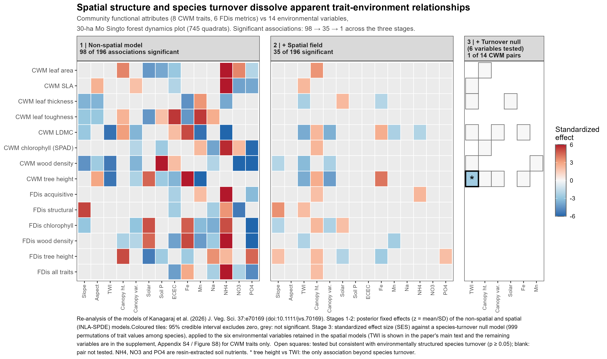
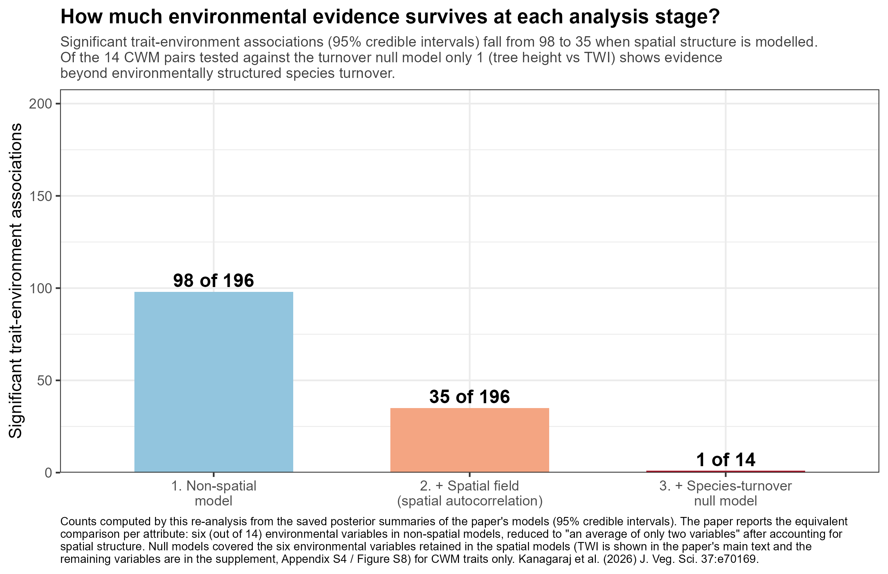

What environmental signals in a tropical forest's functional composition survive scrutiny?
A reanalysis of trait environment relationships showing how spatial structure and species turnover change the apparent environmental signal.
In a recent paper in the Journal of Vegetation Science (2026), my coauthors and I asked how environmental gradients (topography, soil nutrients and canopy structure) relate to the functional composition of plants on the 30 ha Mo Singto forest dynamics plot in Thailand.
Using around 135,000 woody plants and eight field measured functional traits, from which eight community weighted mean (CWM) and six functional dispersion (FDis) attributes were derived, we used a spatially explicit Bayesian (INLA SPDE) framework to investigate trait environment relationships.
We initially considered 24 environmental variables, but removed 10 highly correlated variables based on variance inflation factors, leaving 14 environmental variables for the subsequent analyses.
We found that topographic water availability, represented by the topographic wetness index (TWI), was the dominant environmental gradient associated with community functional patterns, aligning functional composition along the acquisitive to conservative resource use trade off.
Three stages of analysis
The figures below are an analytical synthesis I created for this page by reanalysing the paper's models and null model results. The first comparison tracks the same 196 trait environment relationships in non spatial models and models with an explicit spatial random field. A separate species turnover null model was then used to examine a restricted set of community weighted mean relationships, asking whether their observed associations were consistent with environmentally structured species turnover or showed evidence beyond that expectation.
Stage 1: The apparent environmental signal
When space is ignored, 98 of 196 possible trait environment relationships appear significant. This provides a broad picture of environmental relationships in community functional composition, but does not distinguish environmental effects from spatially structured variation.
Stage 2: Accounting for spatial structure
Once an explicit spatial random field is included, 35 of the same 196 relationships remain significant. This shows that much of the apparent environmental signal is associated with spatial structure that is not captured by the non spatial models.
Separate follow up: Species turnover null model
The species turnover null model was applied to community weighted mean relationships for the environmental variables retained in the spatial models. It asks whether the observed trait environment relationships are consistent with environmentally structured species turnover. The tree height and TWI association was the only one showing evidence beyond the species turnover expectation.
Evidence decomposition

Figure 1. Evidence decomposition of trait environment relationships. The first two panels show the 14 functional attributes, eight CWM and six FDis attributes derived from eight field measured traits, against the 14 environmental variables retained after multicollinearity screening. These panels compare the same relationships before and after accounting for spatial structure. The third panel presents the separate species turnover null model, applied to a restricted set of CWM relationships. The tree height and TWI association is the only one showing evidence beyond the species turnover expectation.
How much environmental evidence survives?

Figure 2. Comparison of significant trait environment relationships in non spatial and spatial models, alongside a separate species turnover null model analysis. The first two results are directly comparable: 98 of the same 196 possible relationships were significant in non spatial models, compared with 35 after accounting for spatial structure. The species turnover null model was conducted separately on a restricted set of community weighted mean relationships. It found that the tree height and TWI association was the only one showing evidence beyond the species turnover expectation. The third result is therefore not a further reduction from 35 relationships, but a distinct follow up analysis.
What does this tell us?
Small scale functional composition in this old growth forest is therefore largely a story of species replacement along environmental gradients, rather than direct trait environment filtering.
The analysis highlights why environmental relationships in spatially structured ecological communities can be difficult to interpret. Apparent trait environment relationships can arise from spatial structure and from environmentally structured changes in species composition. Accounting for these processes changes the interpretation of the ecological signal.
Paper
Kanagaraj, R., Brockelman, W.Y., Wiegand, T., Nathalang, A., Yang, J., Tripathi, N.K. & Chanthorn, W. (2026). Spatial regulation of trait environment interactions shapes plant community functional patterns in a tropical forest. Journal of Vegetation Science 37: e70169. doi:10.1111/jvs.70169
Reanalysis note
The counts for the non spatial and spatial models were computed by reanalysis of the paper's saved posterior model summaries and represent totals across the same 196 trait environment relationships. The species turnover null model was analysed separately for a restricted set of community weighted mean relationships. The complete evidence table and analysis materials are available through the paper and its Figshare archive.
← Back to Research Highlights